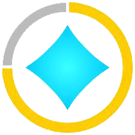
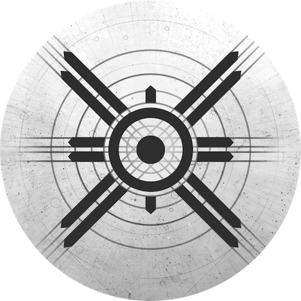
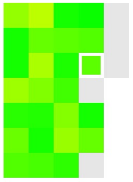
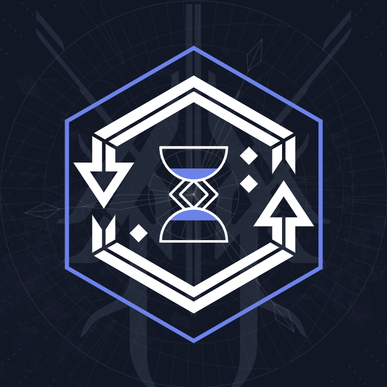

Destiny Item Manager (DIM)
This is Destiny Item Manager (DIM) it is very useful for equipping and moving items around on your characters and vault, as well as saving preset loadouts for quick access for say specific raids or things. It is available on web-browser, windows application and phone/tablet/mobile application.
D2 Gunsmith
This website Is similar to light.gg but it allows you to put each different perk on and shows you exactly how they affect the stats (you can also apply mods and masterworks (with varying levels of masterwork completion), you can also save what the roll you want to get is to your DIM whishlist from this website too, I would recommend this website for anyone who is wanting to see what rolls they think would work for them opposed to just seeing what the possible rolls are and what the "community" rolls are.

Light.gg
This is light.gg. The website is useful as it shows every roll for every possible weapon in the game, as well as showing the weeks trials rewards and map, as well as XUR's weekly items (as well as Iron banner when that is out) and also shows what are new weapons and armour from new seasons and DLC's.

Ishtar Commander
This is Ishtar Commander it's basically the same as DIM. However, it also tracks quests which makes it useful for tracking the progress of quests that only show percentages in-game, as Ishtar can show it in a non-percentage form (such as 1/100 kills). Ishtar Commander is available as an application on Windows (from the windows store) for Mac, and also for mobile on IOS and GooglePlay.
Lowlidev
This website is good for keeping track of anything in the world before beyond light (doesn't have Europa on it). It's a pretty good visual representation of where things are and how many so I would recommend it for example if looking to find corrupted eggs.
Destiny Sets
This website is basically a database of all destiny items throughout the years/seasons. So is useful sometimes if you want to find a specific piece of gear from a while ago or that's just come out or anything.
Destiny 2 solo enabler
This link is for Github download for a program that allows you to load into activities solo, the program should be running when in orbit and enabled there, then simply disabled when you want to do activities with other people. While Bungie has said they will not outrightly ban people for using this they said that there is no definitive answer for if they will in the future, so do use at your own risk (though as of yet no one has been banned for using it).

Destiny 2 Historical Heatmap
This website gives you a heatmap breakdown of how much you have played Destiny 2 each day since launch, it's interesting to see. (Also works for D1).

Time Wasted on Destiny
Similar to the "Destiny 2 Historical Heatmap" this website shows how much time per character you have played in Destiny, as well as how much time you have spent on characters that have been deleted.
Trials Report
This is a useful website for checking your own trials stats on a match by match basis, as well as seeing your past stats. Its also useful for checking the opposing team's stats if you want to.
Crucible Report
This is a useful website for checking your own PVP / Crucible stats on a match by match basis, as well as seeing your past stats. Its also useful for checking the opposing team's stats if you want to.
Guardian Report
This is a useful website for checking your own PVE stats. Its also useful for checking the rest of your fireteams stats too.